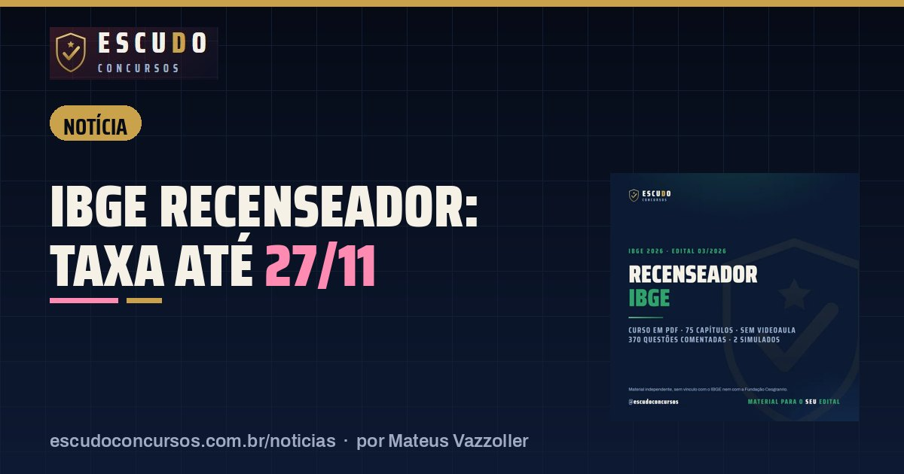

IBGE Recenseador: inscrições e pedido de isenção terminam quarta-feira, 25/11, e a taxa vence na sexta, 27/11
NotíciaPublicado em 23 de novembro de 2026 · por Mateus Vazzoller, ESCUDO Concursos

Quem quer vestir o colete do IBGE e percorrer as propriedades rurais do seu município como Recenseador do 12º Censo Agropecuário, Florestal e Aquícola tem até quarta-feira, 25/11/2026, às 23h59 (horário de Brasília) para se inscrever no site da Fundação Cesgranrio. O mesmo prazo vale para o pedido de isenção da taxa. Quem não tem isenção paga R$ 70,00 até sexta-feira, 27/11/2026. São 27.279 vagas temporárias, e basta ter o ensino fundamental completo.
| Órgão | IBGE, 12º Censo Agropecuário, Florestal e Aquícola |
|---|---|
| Banca | Fundação Cesgranrio |
| Vagas | 27.279, temporárias, com ensino fundamental |
| Remuneração | R$ 1.741,00 fixos mais parcela por produção de até R$ 2.629,00 |
| Inscrições e isenção | até 25/11/2026, às 23h59 de Brasília |
| Taxa | R$ 70,00, paga até 27/11/2026 |
Como fazer a inscrição até quarta-feira?
A inscrição é feita só pela internet, no sistema da Cesgranrio, em www.cesgranrio.org.br. Antes de começar, confira no Anexo I do edital a lista de vagas por município, que é dividida por área de trabalho. O edital recomenda usar já na inscrição a conta gov.br, que precisa ter selo prata ou superior na hora da contratação.
| Etapa | Prazo |
|---|---|
| Inscrição e pedido de isenção | até 25/11/2026, 23h59 |
| Pagamento da taxa de R$ 70,00, por GRU ou PagTesouro | até 27/11/2026 |
| Resultado preliminar das isenções | 30/11/2026 |
| Relação preliminar de inscrições deferidas | 14/12/2026 |
| Cartão de Confirmação de Inscrição, com o local de prova | 26/01/2027 |
| Prova objetiva, das 13h às 17h | 31/01/2027 |
As datas depois da inscrição são previstas, como o próprio Anexo IV do edital as chama.
Quem pode pedir isenção da taxa?
O edital prevê isenção para candidatos hipossuficientes e para doadores de medula óssea. O pedido é feito no mesmo sistema e no mesmo período da inscrição, então também termina às 23h59 de 25/11/2026. O resultado preliminar está previsto para 30/11/2026. Acompanhe o resultado e os próximos avisos na página do processo seletivo na Cesgranrio.
O que fazer depois de inscrito?
A prova tem 60 questões de cinco alternativas: 15 de Língua Portuguesa, 15 de Matemática e 30 de Conhecimentos Técnicos, que tratam do próprio trabalho de campo do Censo. Para ser aprovado, é preciso fazer no mínimo 18 pontos no total e pelo menos 1 ponto em cada disciplina. Os Conhecimentos Técnicos são metade da prova e o primeiro critério técnico de desempate, por isso merecem a maior parte do tempo de estudo. O que cai em cada bloco está no guia do concurso IBGE Recenseador e no post o que estudar para Recenseador.
Curso ESCUDO Recenseador IBGE (12º Censo Agro) em PDF: 75 capítulos e 370 questões, de acordo com o edital, 2 simulados de 60 questões no formato da prova. R$ 29,90.
Ver o curso
Perguntas frequentes
Até quando posso me inscrever para Recenseador do IBGE?
Até quarta-feira, 25/11/2026, às 23h59 no horário de Brasília, pelo site da Fundação Cesgranrio.
Qual é o valor da taxa e até quando pagar?
A taxa é de R$ 70,00, paga por GRU ou PagTesouro até 27/11/2026.
Quando é a prova do IBGE Recenseador?
A prova objetiva está prevista para 31/01/2027, das 13h às 17h, com 60 questões.
Leia também
- NotíciaGM Campinas: inscrições e pedido de isenção abrem quarta, 25/11, às 10h
24 de novembro de 2026 · Inscrições da Guarda Municipal de Campinas abrem quarta, 25/11, às 10h, no site da Vunesp. Isenção até 02/12, inscrições até 08/01/2027 e taxa de R$ 67,90.
- NotíciaTRT-4 Técnico Judiciário: inscrições terminam quarta-feira, 25/11, às 23h59, e o boleto vence na quinta, 26/11
23 de novembro de 2026 · Concurso TRT-4 (RS): inscrições para Técnico Judiciário terminam em 25/11/2026, às 23h59, na FCC. Taxa de R$ 90,00, boleto até as 22h de 26/11.
- NotíciaBanestes Técnico Bancário: inscrições terminam segunda-feira, 23/11, às 23h59, e o boleto vence na terça, 24/11
21 de novembro de 2026 · Concurso Banestes: inscrições para Técnico Bancário terminam em 23/11/2026, às 23h59, na FCC. Boleto de R$ 67,00 gerado até as 22h e pago até 24/11.
Guia completo do concurso: edital, vagas e o que cai · Mais notícias e dicas de concursos